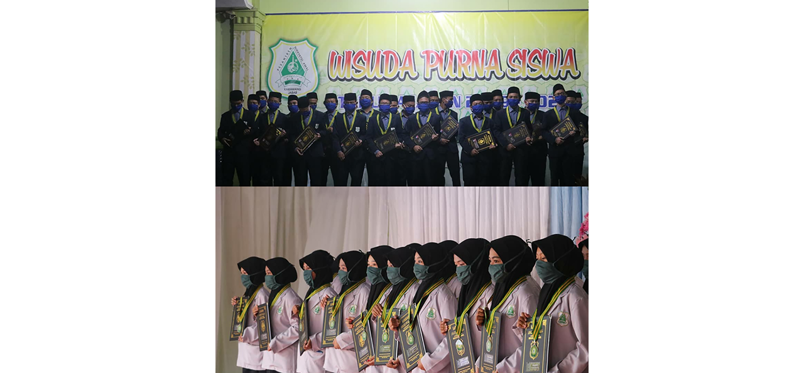
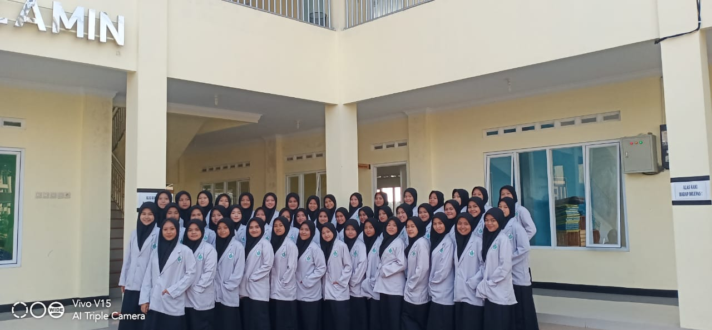
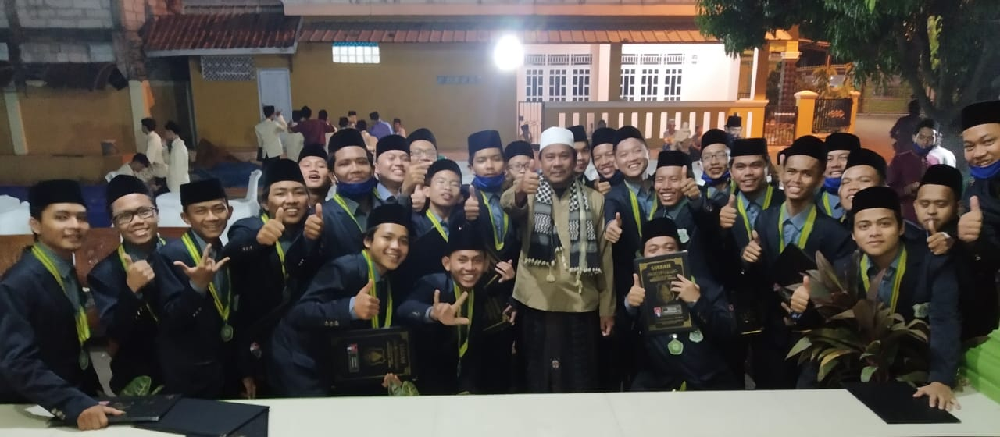

-

Wisuda Purna Siswa Aliyah Nihayatul Amal.
2019 - 2020
Perpisahan Bukan Akhir dari Segala-Nya.
-

Al - Banat
Kebersamaan itu mahal harganya.
-

Al - Banat
CINTA itu membuat kamu bahagia dan belajar mengenai banyak hal.
-

Al - Banin
Pastikan hari ini kamu sudah ngopi.